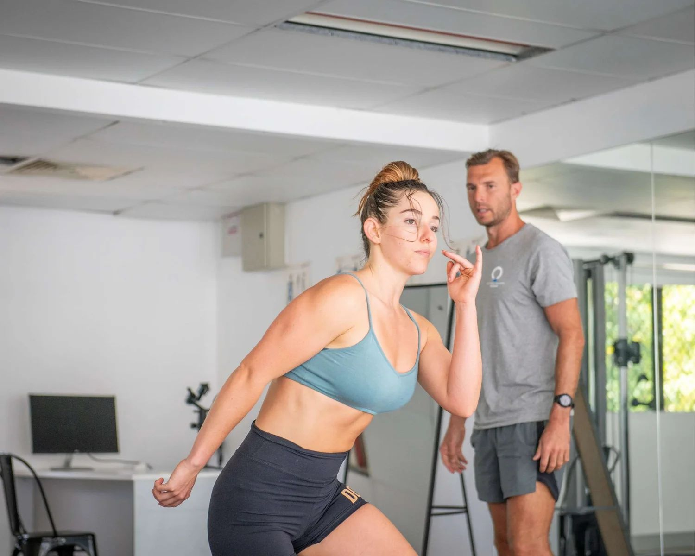
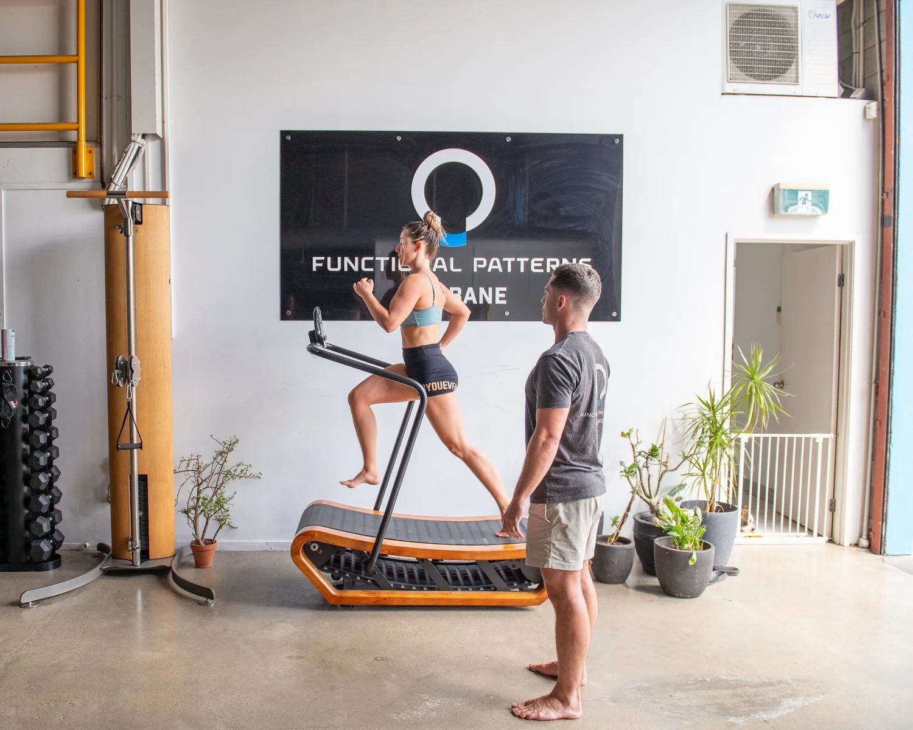

Hip, Knee & Shoulder Pain
Joint pain comes from things rubbing on things that they shouldn't, and leaning on things that they shouldn't. We find the dysfunctional patterns and fix them.
Written by Louis Ellery • Last reviewed: April 2026
Many people assume they either have to live with joint pain or stop exercising altogether. They're told the cartilage is worn, the joint is degenerating, or they just need to "take it easy."
We take a completely different approach. Through targeted exercise that activates the right muscles and movement pathways, you can actually gain muscle while reducing pain.
The key is identifying the patterns that are causing things to rub, compress, and wear — then correcting them so the joint can function the way it was designed to.
Our Approach
Joint pain happens when structures are being loaded unevenly. A hip that drops on one side, a shoulder that sits forward, a knee that collapses inward — these are the patterns that cause joint wear and pain over time.
We identify these patterns through slow-motion gait and posture analysis, then systematically correct them through:
Real Results
Multiple Basketball Injuries
Emma came to us with a history of basketball injuries including a labrum tear, AC joint sprain, patella tendonitis, and MCL tear. Through our corrective approach, she achieved improved deep abdominal tension, corrected hip hike, reduced pronation, improved scapular position, and significant body composition changes.
"After years of injuries from basketball — labrum tear, AC sprain, patella tendonitis, MCL tear — I thought I'd just have to manage the pain forever. FP Brisbane has completely changed my body. My deep abdominals are actually firing now, my hip hike has corrected, my feet aren't pronating the way they were, and my shoulder sits where it should. My body composition has changed dramatically and I'm moving better than I ever did as an athlete."
— Emma
Degenerative Hip Disease — Avoided Hip Replacement
Charma was diagnosed with early degenerative hip disease. She had a hip arthroscopy that didn't help, and was then told she'd need a full hip replacement. After 17 months with us, her chronic pain has been eliminated completely.
"I came to FP Brisbane after being told I needed a hip replacement. The arthroscopy didn't work, and I was in chronic pain. 17 months later, not only is my hip pain gone, but the unexpected benefits have been incredible — my posture has completely changed, my energy levels are through the roof, I'm sleeping better than I have in years, my stress has reduced dramatically, and even my performance at work has improved. My PMT has reduced significantly, and I feel like I'm being a better role model for my kids because I'm showing them what it looks like to take care of your body properly. This has changed every aspect of my life."
— Charma
Groin Injury — Fixed in 3–4 Sessions
Sivert had been dealing with a groin injury that his physiotherapist estimated would take 2 years to resolve. Through our online training program, we identified the movement pattern causing the issue and corrected it in just 3–4 sessions. What conventional physio couldn't fix in months, we resolved by addressing the root cause.
More Success Stories
"I had chronic shoulder pain from years of HIIT training. No matter what I did — rest, physio, massage — it kept coming back. FP Brisbane showed me that my shoulder wasn't the problem, it was how my whole body was moving that was overloading it. The shoulder pain is completely gone now and I'm stronger than I was before the injury."
— Cathy
"My SIJ pain and pelvic floor issues started after having kids and I just assumed that was my new normal. Turns out it didn't have to be. FP Brisbane has been an absolute game changer — my SIJ pain is completely gone, I can actually feel my lower core working for the first time since having children, and my pelvic floor function has improved dramatically. I wish I'd found this years ago instead of just accepting it."
— Katie Jarvisto
Evidence-Based
Peer-reviewed research supporting this treatment approach:
Common Questions
Joint pain that returns after treatment is almost always a movement problem, not a joint problem. If the way you walk, squat, or reach continues to overload the same structures, inflammation and pain will return regardless of how many cortisone injections, surgeries, or rehab exercises you complete. Lasting joint pain relief requires changing the movement patterns that created the overload.
In many cases, yes. Joint pain caused by movement dysfunction — which includes most hip, knee, and shoulder pain — responds well to biomechanics-based correction. By improving how force distributes through the joint during walking and daily movement, we reduce the compressive and shearing forces that cause inflammation and degeneration. Many clients avoid surgery entirely.
Joints are designed to handle specific types of loading. When movement patterns become dysfunctional, joints receive forces they're not designed to withstand. Movement correction restores proper joint loading by retraining how your entire kinetic chain works together, from foot mechanics through hip stability to rib cage positioning.

Ready to Start?
90 minutes to understand exactly why your joint pain exists, which patterns drive it, and what needs to change.